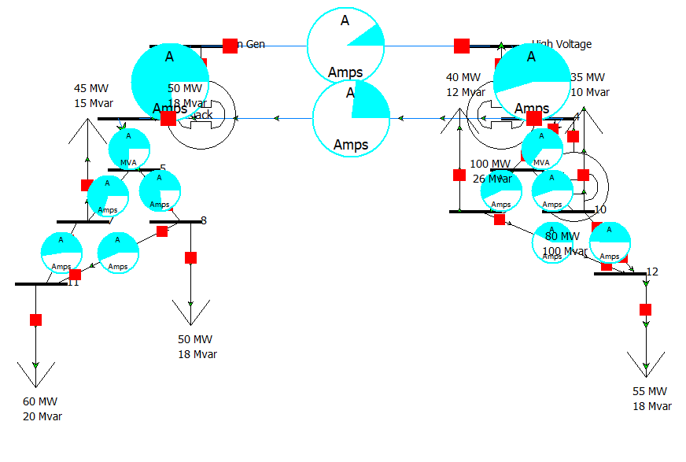
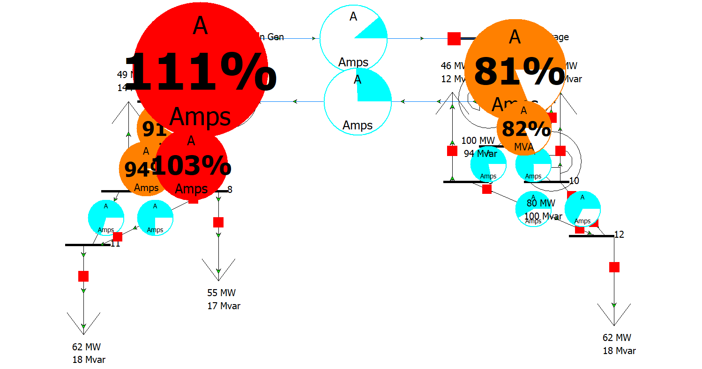
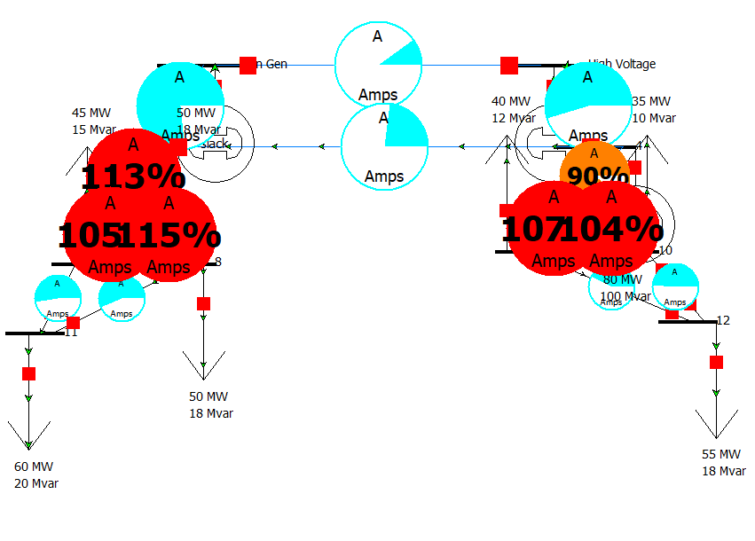
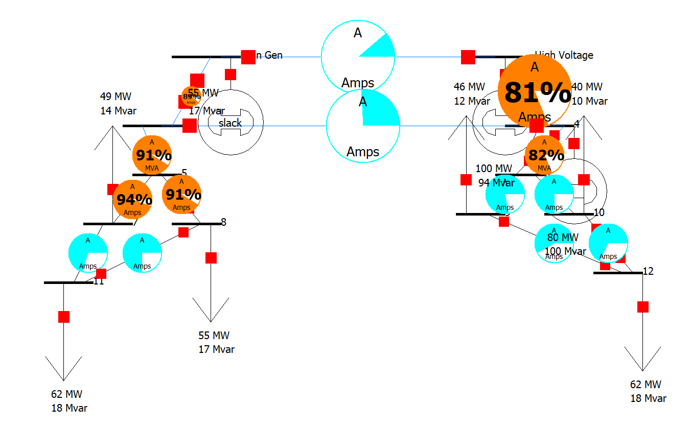
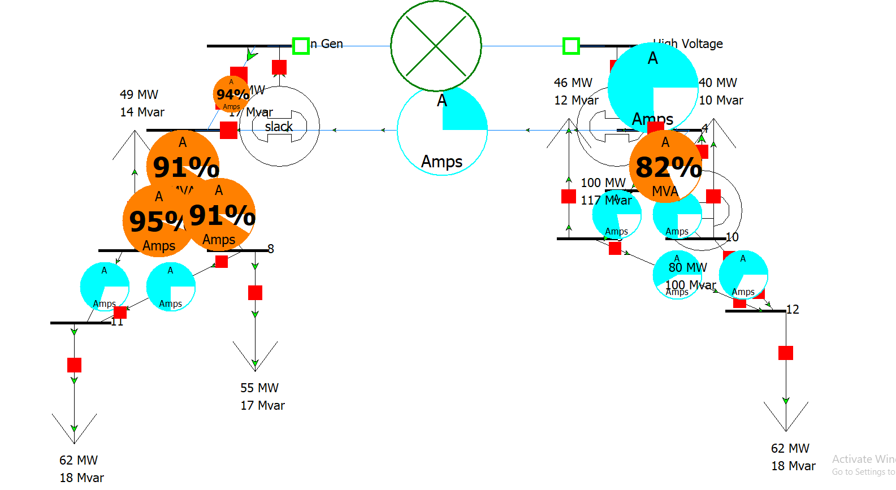

Project Overview
CompletedThis one's a step up in scale from my single-substation work — a full 12-bus transmission and sub-transmission network, stepping a 230 kV backbone down to a 115 kV regional system. I wanted to move past steady-state load flow and actually test how the grid behaves under peak demand stress and under an N-1 contingency, which is the standard reliability bar utilities have to design against: the system has to survive losing any single major element without cascading.
Baseline Setup
I built the 12-bus model with a 230 kV high-voltage backbone feeding a 115 kV sub-transmission layer, solved with PowerWorld's Newton-Raphson full exact solver. Under normal conditions, total system load across buses 7–12 came out to roughly 285 MW, with every bus holding voltage at or above the 0.95 p.u. stability floor and comfortable capacity margin on every line.

1. Baseline solved power flow — all lines well under 80% loading
Peak Demand Stress Test
Instead of manually editing loads one at a time, I automated a 24-hour peak demand scaling run using PowerWorld's auxiliary (.aux) scripting, applying a 1.15x multiplier across every load center. That pushed total system demand from ~285 MW to ~328 MW — Bus 11 alone went from 60 MW to 69 MW. That 15% surge was enough to expose real thermal bottlenecks on the 115 kV corridors feeding local load centers, with two lines hitting 111% and 103% of their rated MVA capacity.

2. Peak demand surge — 111% and 103% thermal overloads on 115 kV lines

3. Full-network view of the same overload condition
Diagnosing the Bottleneck & Fixing It
My first instinct was to fix this operationally — re-dispatching active power across Generators 1, 2, and 4 to route around the constrained corridors. That didn't work, and it made sense once I thought about it: the bottleneck was local. No amount of shifting generation upstream changes the fact that a specific 115 kV segment physically can't carry that much current into that load pocket. The actual fix had to be a capacity upgrade — I raised the continuous MVA thermal ratings (Limit Set A) on the constrained line segments, effectively modeling a conductor upgrade (like moving to higher-ampacity ACSR). That brought every branch back under 100% loading.

4. Same peak demand case after the thermal rating upgrade — overloads cleared
N-1 Contingency Check
Once the peak-demand case was stable, I still needed to check the reliability side: what happens if the grid loses a major element unexpectedly? I tripped the main 230 kV backbone tie-line — the primary connection from the generation source into the rest of the network — and re-solved the power flow to see how the remaining paths absorbed the redirected power.

5. 230 kV backbone tripped — power reroutes through secondary 115 kV paths
- Remaining transmission paths absorbed the full shifted power transfer with no cascading overloads
- Maximum line loading across the network stayed capped between 82% and 95%
- System held stable voltage and thermal margins throughout the outage — a passing N-1 result
What I Ran Into
- SimAuto COM automation kept failing: I originally tried to drive the peak-demand scaling with a Python script over PowerWorld's SimAuto COM interface, but kept hitting a
pywintypes.com_error: Invalid class stringbecause the COM object wasn't registered/licensed on my machine. I dropped the Python approach entirely and switched to native PowerWorld .aux auxiliary script blocks loaded directly through File → Load Auxiliary — more reliable and it's what PowerWorld actually expects. - The .aux scripts wouldn't parse cleanly at first: PowerWorld's script parser is strict about DATA/SCRIPT block headers and file encoding. I had to standardize on plain ASCII output (
Out-File -Encoding asciiin PowerShell) and get the block headers exactly right before it would load without errors. - Canvas labels lied to me for a bit: After running the load multiplier, some on-screen labels still showed 60 MW even though the solver had already updated Bus 11 to 69 MW — turned out those were static text objects, not fields bound to the live database. I stopped trusting the canvas text and started verifying actual values through the Load Information Dialog instead.
- Re-dispatch doesn't fix a local thermal problem: Shifting MW setpoints across Generators 1, 2, and 4 didn't touch the 115 kV overloads because the constraint was branch impedance and local current draw, not generation mix — a good reminder that operational fixes and physical asset upgrades solve different classes of problems.
Key Takeaways
- Baseline stable ≠ peak-ready: The network was fully healthy at ~285 MW baseline, but a realistic 15% peak surge alone was enough to overload two 115 kV corridors — a reminder that steady-state checks alone don't tell you much about how a system holds up during real demand swings.
- Local bottlenecks need local fixes: Generation re-dispatch is a system-wide tool; it can't solve a problem caused by one physical conductor being undersized for the load it's actually carrying.
- The network meets N-1 criteria: Losing the primary 230 kV backbone tie-line didn't cascade — remaining paths picked up the load with loadings topping out at 95%, which is the kind of margin NERC's N-1 standard is designed to require.